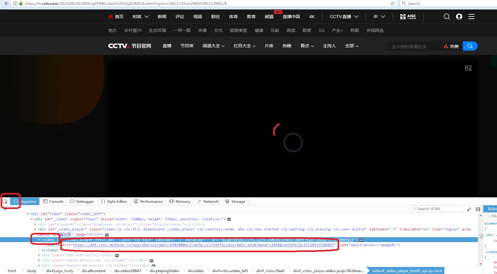
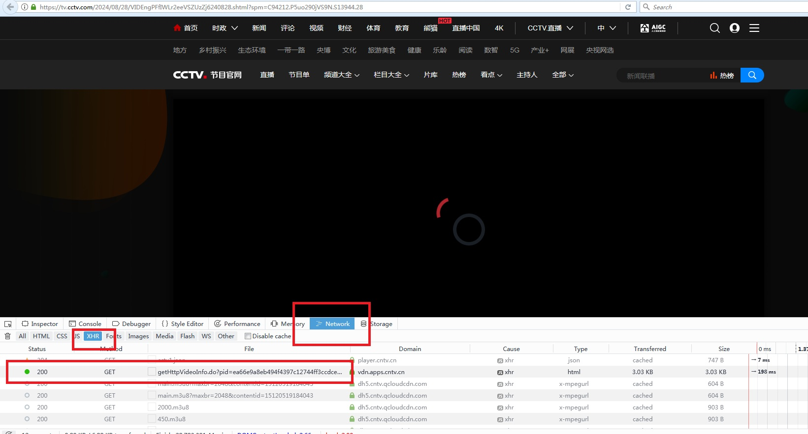

之前看到一篇文章，大意是可惜大部分程序员没能把在工作上解决问题的能力用在生活上等的别的地方，内心触动了一下，我把这称之为觉醒、开窍。
最近党建工作刚好需要转播央视网的视频进行宣传教育，因此有了下载网上视频的需求，本着“开窍”的指导思想，了解了一下m3u8视频的下载方式。
原理
1、打开央视网的视频播放网页，F12调试模式确定其视频的链接是m3u8格式的文件。
2、了解什么是m3u8，确定其实际上是一个包含多个URL的文本文件，每个URL指向一个视频片段，均可单独下载播放又或者多个拼接成一个完整视频。
步骤
一、找到m3u8文件。
打开某个视频链接，比如：弘扬时代精神 共建网络文明。
【F12】打开调试模式，搜索到页面HTML的【video】标签的【source】，得到视频链接是指向一个【main.m3u8】文件。

1 | https://dh5.cntv.myhwcdn.cn/asp/h5e/hls/main/0303000a/3/default/ea66e9a8eb494f4397c12744ff3ccdce/main.m3u8?maxbr=2048&contentid=15120519184043 |
注：经过验证，发现这个链接直接下载后的视频会花屏，因此这里的作用只是告诉了我，视频播放用的是m3u8文件。
参考这篇文章怎么下载CCTV央视网视频到本地，确定视频的下载地址是截获【gethttpvideoinfo.do】请求获得的。再次用【F12】打开调试模式，选择【Network】，选择【XHR】，再按【F5】刷新重新请求页面，出现【gethttpvideoinfo.do】请求。
右键选择【Copy】，选择【Copy Response】，得到如下文本。
1
{"ack":"yes","status":"001","is_preview":"0","tag":"时代精神 网络文明","title":"[视频]【新思想引领新征程】弘扬时代精神 共建网络文明","play_channel":"CCTV-13高清","produce":"","editer_name":"林涛","produce_id":"wxsb01","column":"新闻联播高清精切","f_pgmtime":"2024-08-28 19:13:44","image":"https://p1.img.cctvpic.com/photoAlbum/vms/standard/img/2024/8/28/VIDEmvOO0xRG89GRPjG3wxzb240828.jpg","cdn_info":{"cdn_vip":"vod.cntv.lxdns.com","cdn_code":"VOD-MP4-CDN-CNC","cdn_name":"3rd网宿"},"video":{"totalLength":"317.00","chapters":[{"duration":"240","image":"https://p1.img.cctvpic.com/photoAlbum/vms/standard/img/2024/8/28/VIDEmvOO0xRG89GRPjG3wxzb240828.jpg","url":""},{"duration":"77","image":"https://p1.img.cctvpic.com/photoAlbum/vms/standard/img/2024/8/28/VIDEmvOO0xRG89GRPjG3wxzb240828.jpg","url":""}],"chapters2":[{"duration":"240","image":"https://p1.img.cctvpic.com/photoAlbum/vms/standard/img/2024/8/28/VIDEmvOO0xRG89GRPjG3wxzb240828.jpg","url":""},{"duration":"77","image":"https://p1.img.cctvpic.com/photoAlbum/vms/standard/img/2024/8/28/VIDEmvOO0xRG89GRPjG3wxzb240828.jpg","url":""}],"chapters3":[{"duration":"240","image":"https://p1.img.cctvpic.com/photoAlbum/vms/standard/img/2024/8/28/VIDEmvOO0xRG89GRPjG3wxzb240828.jpg","url":""},{"duration":"77","image":"https://p1.img.cctvpic.com/photoAlbum/vms/standard/img/2024/8/28/VIDEmvOO0xRG89GRPjG3wxzb240828.jpg","url":""}],"chapters4":[{"duration":"240","image":"https://p1.img.cctvpic.com/photoAlbum/vms/standard/img/2024/8/28/VIDEmvOO0xRG89GRPjG3wxzb240828.jpg","url":""},{"duration":"77","image":"https://p1.img.cctvpic.com/photoAlbum/vms/standard/img/2024/8/28/VIDEmvOO0xRG89GRPjG3wxzb240828.jpg","url":""}],"validChapterNum":4,"url":""},"hls_cdn_info":{"cdn_vip":"hls.cntv.myhwcdn.cn","cdn_code":"VOD-HLS-CDN-HW","cdn_name":"3rd华为"},"hls_url":"https://hls.cntv.myhwcdn.cn/asp/hls/main/0303000a/3/default/ea66e9a8eb494f4397c12744ff3ccdce/main.m3u8?maxbr=2048","asp_error_code":"0","manifest":{"audio_mp3":"https://dhls.cntv.qcloudcdn.com/asp/audio/e/a/6/6/ea66e9a8eb494f4397c12744ff3ccdce/mp3/main.m3u8","hls_audio_url":"https://dhls.cntv.qcloudcdn.com/asp/hlsaudio/hls/main/0303000a/3/default/ea66e9a8eb494f4397c12744ff3ccdce/main.m3u8","hls_enc_url":"https://dhls.cntv.qcloudcdn.com/asp/enc/hls/main/0303000a/3/default/ea66e9a8eb494f4397c12744ff3ccdce/main.m3u8?maxbr=2048&contentid=18120319242338","hls_h5e_url":"https://dh5.cntv.qcloudcdn.com/asp/h5e/hls/main/0303000a/3/default/ea66e9a8eb494f4397c12744ff3ccdce/main.m3u8?maxbr=2048&contentid=15120519184043","hls_enc2_url":"https://dhls2.cntv.myhwcdn.cn/asp/enc2/hls/main/0303000a/3/default/ea66e9a8eb494f4397c12744ff3ccdce/main.m3u8?maxbr=2048&contentid=16121029231855"},"client_sid":"Eimmphj2q9SoaUQ6pH4EZcoFYv+6r5NVF8RkzsbPGg4=","public":"1","is_invalid_copyright":"0","is_protected":"0","is_fn_hot":"true","is_p2p_use":true,"default_stream":"chapters3","lc":{"isp_code":"1","city_code":"GZ","provice_code":"GD","country_code":"CN","ip":"113.119.25.207"},"is_ipad_support":"true","version":"0.2","embed":"","is_fn_multi_stream":false}
参考这篇文章央视网视频下载和花屏问题处理，确定视频的真实下载地址是【hls_url】所指向的链接。
1
"hls_url":"https://hls.cntv.myhwcdn.cn/asp/hls/main/0303000a/3/default/ea66e9a8eb494f4397c12744ff3ccdce/main.m3u8?maxbr=2048"
注：TODO 没有进一步研究【Copy Response】得到的文本中所列出的m3u8文件之间的关系。
二、了解m3u8视频。
- 首先了解一下m3u8，感觉这篇文章写的挺好的：M3U8工作原理以及key解密视频流详解。
1
m3u8文件是指UTF-8编码格式的M3U文件，它实际上是一个包含多个URL的文本文件，每个URL指向一个音频或视频片段。这些片段可以是分段的，使得流媒体可以按需传输，从而实现自适应码率。m3u8文件通常用于流媒体传输，是HTTP Live Streaming（HLS）技术的一部分（HTTP LiveStreaming）是一种由苹果公司开发的流媒体传输协议，用于在互联网上实时传输音频和视频内容。它的主要特点是将整个视频流切分成短小的ts片段，并使用m3u8播放列表文件指示这些片段的顺序和位置。
注：这里提到了HTTP Live Streaming（HLS）技术，对应上了前面的”hls_url”。
进一步参考这篇文章，学习m3u8的知识m3u8格式详解。
有了上面这些背景知识，基本上可以动手下载视频了。另外我还参考了这个小工具：m3u8-downloader，之所以列出这个小工具，因为它确实够小，简单看完源码可以确定，m3u8视频可以直接下载，并且可以直接拼接然后播放。
注：TODO 在调研的过程中，还找到了两个有用的工具，但来不及验证，这里先列出来：FFmpeg、lux。
三、下载m3u8视频。
浏览器直接输入之前找到的【Copy Response】链接，下载对应的m3u8文件。打开文件可以看到如下内容：
1
2
3
4
5
6
7#EXTM3U
#EXT-X-STREAM-INF:PROGRAM-ID=1, BANDWIDTH=460800, RESOLUTION=480x270
/asp/hls/450/0303000a/3/default/ea66e9a8eb494f4397c12744ff3ccdce/450.m3u8
#EXT-X-STREAM-INF:PROGRAM-ID=1, BANDWIDTH=870400, RESOLUTION=640x360
/asp/hls/850/0303000a/3/default/ea66e9a8eb494f4397c12744ff3ccdce/850.m3u8
#EXT-X-STREAM-INF:PROGRAM-ID=1, BANDWIDTH=1228800, RESOLUTION=1280x720
/asp/hls/1200/0303000a/3/default/ea66e9a8eb494f4397c12744ff3ccdce/1200.m3u8按照前面的了解，这里应该是实现根据不同的带宽跳转到不同的链接，因此选择其中一个就行，比如【450.m3u8】。由于这里列的是跳转地址，最开头的【/】表示根地址，因此实际地址是之前的m3u8文件下载的根地址加上这里的地址：
1
https://hls.cntv.myhwcdn.cn/asp/hls/450/0303000a/3/default/ea66e9a8eb494f4397c12744ff3ccdce/450.m3u8
再次在浏览器直接输入地址下载该新的m3u8文件，打开文件看到的内容如下：
1
2
3
4
5
6
7
8
9
10
11#EXTM3U
#EXT-X-VERSION:3
#EXT-X-TARGETDURATION:10
#EXT-X-MEDIA-SEQUENCE:0
#EXT-X-PLAYLIST-TYPE:VOD
#EXTINF:10.000000,
0.ts
#EXTINF:10.000000,
1.ts
#EXTINF:10.000000,
2.ts按照前面的了解，这里列出来的ts文件就是实际的视频文件了。这里用的是相对地址，没有最开头的【/】，因此实际地址是之前的m3u8文件下载的目录地址加上这里的地址：
1
https://hls.cntv.myhwcdn.cn/asp/hls/450/0303000a/3/default/ea66e9a8eb494f4397c12744ff3ccdce/0.ts
在浏览器直接上面的ts文件地址，下载对应的文件到本地，直接双击打开用windows自带的windows media player就可以播放视频了。有需要的话，可以参考前面的m3u8-downloader把所有ts文件拼接成一个大文件得到完整的视频文件。

总结
是的，没做之前因为不知道所以难免觉得困难，做了之后感觉很有成就感，再总结一下觉得就那么简单没什么好值得说的。
这篇文章一个是做个经验总结分享，另一个是像前面说的，程序员就应该把在日常工作中分析问题解决问题的能力用到工作之外，学以致用。